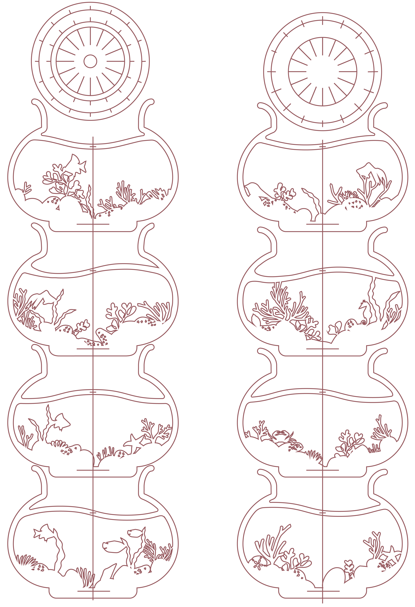

ASSIGNMENT 4: Fish Tank 3D Puzzle
Apr 14, 2016
Inspirations
For this assignment, we are inspired by a Japanese 360 degree book artist Yusuke Oono.


We decided to make a fish tank using a similar idea of rotated slices in card paper. But unlike a 3D book, the fish tank should be hollow in the middle. Here are some pictures we referred to for the structure.
Design
A basic piece
Design for laser cutting
Process
In our early attempts, we had some issue with the thickness of the paper. As these pieces are thick, it is very hard to put them in the right angle. But later we found that this issue can be solved by double cutting the notch.
We were also having a hard time to put the edges in the middle. We tried multiple ways but most of them doesn't work idealy. And we end up putting a small thin piece of paper in the middle to connect them, although some of the angles are still not perfect.